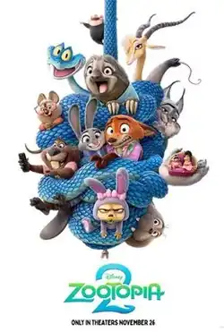

Zootopia 2
| Zootopia 2 | |
|---|---|
 Theatrical release poster | |
| Directed by | Jared Bush Byron Howard |
| Written by | Jared Bush |
| Produced by | Yvett Merino |
| Starring | |
| Music by | Michael Giacchino |
Production company | |
| Distributed by | Walt Disney Studios Motion Pictures[a] |
Release date |
|
| Country | United States |
| Language | English |
Zootopia 2 (titled Zootropolis 2 or Zoomania 2 in various regions)[b] is an upcoming American animated buddy cop comedy film produced by Walt Disney Animation Studios. The sequel to Zootopia (2016), it is being directed by Jared Bush and Byron Howard,[1] written by Bush, and produced by Yvett Merino.[2] Ginnifer Goodwin, Jason Bateman, Idris Elba, Jenny Slate, Nate Torrence, Bonnie Hunt, Don Lake, Tommy Chong, Alan Tudyk, and Shakira reprise their roles from the first film, joined by newcomers Ke Huy Quan, Fortune Feimster, Quinta Brunson, Jean Reno, Macaulay Culkin, Brenda Song, Patrick Warburton, and Wilmer Valderrama. The film follows Judy Hopps and Nick Wilde as they pursue Zootopia's new and mysterious reptilian resident Gary De'Snake.
Zootopia 2 is scheduled to be released in the United States on November 26, 2025.
Premise
Judy and Nick find themselves on the twisting trail of a mysterious reptile who arrives in Zootopia and turns the mammal metropolis upside down. To crack the case, Judy and Nick must go undercover to unexpected new parts of town.
— Walt Disney Animation Studios[‡ 1]
Voice cast
- Ginnifer Goodwin as Judy Hopps, a young optimistic rabbit from Bunnyburrow and the first rabbit of the Zootopia Police Department (ZPD)[3]
- Jason Bateman as Nick Wilde, a sly red fox and a former small-time con artist who later joined the Zootopia Police Department as the first fox
- Idris Elba as Chief Bogo, the cape buffalo chief of police of the Zootopia Police Department[4]
- Nate Torrence as Benjamin Clawhauser, a cheetah who works at the ZPD[‡ 2]
- Ke Huy Quan as Gary De'Snake, a pit viper being pursued by Judy and Nick while trying to help his family[5]
- Fortune Feimster as Nibbles Maplestick, a beaver living in Marsh Market who encounters Judy and Nick
- Shakira as Gazelle, a gazelle pop music star[‡ 3]
- Quinta Brunson as Dr. Fuzzby, a quokka who is Judy and Nick's police partner therapist[6]
- Jean Reno as Bushron, a goat police officer[7]
- Maurice LaMarche as Mr. Big, a Godfather-esque crime boss Arctic shrew[7]
- Bonnie Hunt as Bonnie Hopps, a rabbit and mother of Judy[8]
- Don Lake as Stu Hopps, a rabbit and father of Judy[8]
- Jenny Slate as Dawn Bellwether, a sheep who was behind the savage attacks in the first film and is currently imprisoned[8]
- Alan Tudyk as Duke Weaselton, a weasel crook[8]
- Tommy Chong as Yax, a yak[8]
- Josh Dallas as the Frantic Pig[8]
- Leah Latham as Fru Fru, Mr. Big's daughter[8]
- Mark Rhino Smith as Officer McHorn, a rhino officer[8]
- Raymond S. Persi as Flash Slothmore, a sloth[8]
- Peter Mansbridge as Peter Moosebridge, a moose news reporter[9]
Additionally, Macaulay Culkin, Brenda Song, Patrick Warburton, and Wilmer Valderrama have been cast in undisclosed roles.[10]
Other new characters who are introduced in the film include Wind Dancer (a stallion and former actor who succeeds Leodore Lionheart as the Mayor of Zootopia), the Linxleys (a wealthy family of lynxes), Chevron (another goat police officer), and Marlon Grizzby (a grizzly bear police officer).[11][12]
Production
Development
In June 2016, directors Byron Howard and Rich Moore were in talks about the possibility of a Zootopia sequel.[13][14] On February 8, 2023, during the Q1 earnings call, Disney CEO Bob Iger confirmed that the sequel was in active development.[15] Later that day, screenwriter Jared Bush confirmed that he was working on the film.[‡ 4] Ginnifer Goodwin, who voices Judy Hopps, told CinemaBlend that she would like to see a role reversal between Judy and Nick in the sequel. "I would like to see Nick have to be the one to convince Judy that the world is worth fighting for". Jason Bateman, who voices Nick Wilde, also told CinemaBlend about his idea for the sequel. "The two of us [Nick and Judy], kicking butts out there. Cleaning up the streets. We're a couple of new cops out there. So, bad guys, be warned," he said.[16]
On February 7, 2024, Iger announced the film's release date and that the film would be officially titled Zootopia 2.[17] On April 15, Goodwin confirmed on her Instagram account that she began recording her lines for Judy, revealing that the film was in production.[3] At the D23 Expo on August 9, it was announced that Zootopia 2 would feature reptiles, and Ke Huy Quan was announced to be playing Gary, a snake being pursued by Nick and Judy.[5] Footage was also shown of a sequence in which Nick and Judy search for Gary in Marsh Market.[18] The following day, Bush revealed on his Twitter account that Fortune Feimster joined the cast to voice a beaver named Nibbles.[‡ 5] The same month, Bush was revealed to be the sole writer and director of the sequel, and Yvett Merino was revealed to be the producer.[2] On September 19, Jared Bush became the new chief creative officer of Walt Disney Animation Studios following Jennifer Lee's resignation to become director of Frozen 3. The following day, Bush confirmed that Byron Howard, the original creator and director of Zootopia, had returned to become co-director of Zootopia 2.[1] On November 8, at D23 Brazil, Shakira publicly announced that she was returning to voice Gazelle for the sequel, revealing that she was writing a new song for the film alongside Ed Sheeran, and that Gazelle would don a new outfit.[‡ 3][19] On April 3, at CinemaCon, new footage from the film was shown that revealed the casting of Quinta Brunson as a new character named Dr. Fuzzby.[6] At the 2025 Annecy International Animation Film Festival on June 13, it was announced that Jean Reno would join the cast, and that Maurice LaMarche would reprise his role as Mr. Big.[7] On June 16, Michael Giacchino was confirmed to be returning to compose the score.[20] In July 2025, it was announced that Ed Sheeran would co-work on Shakira's song.[21] On August 7, it was announced that Macaulay Culkin, Brenda Song, Patrick Warburton, and Wilmer Valderrama would join the cast.[22][23] On August 9, 2025, Jared Bush confirmed on social media that Zootopia 2 would have one of the largest voice casts of any film produced by Walt Disney Animation Studios.[24]
The film's teaser poster was unveiled on May 19, 2025, with the teaser trailer releasing the following day on May 20.[25] The film's second teaser poster and first official trailer released on July 30, 2025.
Voice recording for many major characters began to wrap by the end of June through August of that year.[26][27][28][29][30][31]
Release
Zootopia 2 is scheduled to be released in the United States by Walt Disney Pictures on November 26, 2025.[17]
Notes
- ^ Distributed by Walt Disney Studios Motion Pictures through the Walt Disney Pictures banner
- ^ Due to trademark issues, the film is titled Zootropolis 2 in various regions such as the UK, Ireland, Italy and Spain, and Zoomania 2 in Germany. See Zootopia § Alternative titles.
References
- ^ a b Taylor, Drew (September 19, 2024). "Disney Animation Shake-Up: Jennifer Lee Out, Jared Bush in as Chief Creative Officer". TheWrap. Archived from the original on September 20, 2024. Retrieved September 20, 2024.
- ^ a b Exeider, Agent (August 14, 2024). "Jared Bush to be sole Director of Zootopia 2". Zootopia News Network. Retrieved August 17, 2024.
- ^ a b Bythrow, Nick (April 16, 2024). "Zootopia 2 Voice Recording Begins As Judy Hopps Actor Shares BTS Photo". Screen Rant. Retrieved April 25, 2024.
- ^ Ortiz, Andi (July 30, 2025). "'Zootopia 2' Trailer Sees Nick and Judy in Couples Therapy". The Wrap. Retrieved July 31, 2025.
- ^ a b Campione, Katie (August 9, 2024). "'Zootopia 2': Ke Huy Quan Joins Cast Of Upcoming Animated Sequel". Deadline Hollywood. Archived from the original on August 10, 2024. Retrieved August 10, 2024.
- ^ a b Lang, Brent (April 3, 2025). "'Zootopia 2' Hilarious CinemaCon Footage Shows Judy Hopps and Nick Wilde in Partners Therapy, Quinta Brunson Joins Voice Cast". Variety. Retrieved April 3, 2025.
- ^ a b c Roxborough, Scott (June 13, 2025). "Jared Bush Gives Sneak Peek at Disney's 'Zootopia 2' at Annecy". The Hollywood Reporter. Retrieved June 16, 2025.
- ^ a b c d e f g h i Benitez, Crystal (July 30, 2025). "Ginnifer Goodwin and Jason Bateman return in 'Zootopia 2' trailer, along with new characters!". ABC 7. Retrieved July 31, 2025.
- ^ https://x.com/thejaredbush/status/1954327294232994089
- ^ Aldecoa, Kayla (August 7, 2025). "Macaulay Culkin Regrets Skipping This Role During Temporary Retirement".
- ^ Reif, Alex (July 13, 2025). "Welcome Back to Zootopia: Disney Animation Wows Annecy with Sequel Sneak Peek and Surprise Return of Ron Clements". Laughing Place. Retrieved July 13, 2025.
- ^ "Welcome Back to Zootopia, the Zootopia 2 Presentation at Annecy, in Exhaustive Detail". Zootopia News Network. June 20, 2025.
- ^ Snetiker, Marc (June 2, 2016). "Zootopia directors talk sequel, TV potential". Entertainment Weekly. Archived from the original on January 15, 2018. Retrieved January 7, 2018.
- ^ Sciretta, Peter (June 6, 2016). "'Zootopia' Is Now The Second Biggest Original Movie Of All Time; Directors Talk Sequel Possibilities". /Film. Archived from the original on May 11, 2018. Retrieved March 30, 2018.
- ^ D'Alessandro, Anthony (February 8, 2023). "Frozen, Toy Story & Zootopia Sequels In The Works". Deadline Hollywood. Archived from the original on February 8, 2023. Retrieved February 11, 2023.
- ^ O'Connell, Sean (March 7, 2016). "What Zootopia 2 Should Be About, According To The Cast". CinemaBlend. Archived from the original on February 11, 2023. Retrieved May 26, 2023.
- ^ a b Peralta, Diego (February 7, 2024). "Zootopia 2 Sets Fall 2025 Release Date". Collider. Archived from the original on February 7, 2024. Retrieved February 7, 2024.
- ^ Smith, Jeremy; Meenan, Devin (August 9, 2024). "Zootopia 2 Footage Reaction: Disney Heads To The Marsh With Ke Huy Quan As Gary The Snake (D23)". Slashfilm. Archived from the original on August 10, 2024. Retrieved August 10, 2024.
- ^ "Instagram". www.instagram.com. Retrieved August 14, 2025.
- ^ @HollywoodHandle (June 16, 2025). "Michael Giacchino will return as the composer for 'ZOOTOPIA 2.'" (Tweet). Retrieved June 17, 2025 – via Twitter.
- ^ @Shakira (July 30, 2025). "I'm so ready for Zootopia 2!! And guess what? Gazelle is back! So grateful to have worked with @edsheeran on the creation of this exciting new original song! Can't wait for the premiere!" (Tweet) – via Twitter.
- ^ Aldecoa, Kayla (August 7, 2025). "Macaulay Culkin Regrets Skipping This Role During Temporary Retirement".
- ^ @Shakira (August 7, 2025). "With some of the cast of Zootopia 2 and other @DisneyAnimation friends!" (Tweet) – via Twitter.
- ^ https://x.com/thejaredbush/status/1954330342749569529
- ^ Lee, Abigail (May 20, 2025). "'Zootopia 2' Trailer: Disney Sequel Introduces New Animals, Including Ke Huy Quan's Mysterious Snake". Variety. Retrieved May 20, 2025.
- ^ https://x.com/thejaredbush/status/1938119290819121273
- ^ https://x.com/thejaredbush/status/1939806182635680157
- ^ https://x.com/thejaredbush/status/1950307271428493415
- ^ https://x.com/thejaredbush/status/1950981697765294259
- ^ https://x.com/thejaredbush/status/1951492373948862716
- ^ https://x.com/thejaredbush/status/1954327294232994089
Primary sources
In the text, these references are preceded by a double dagger (‡):
- ^ "Feature Films". Walt Disney Animation Studios. Retrieved May 21, 2025.
- ^ @thejaredbush (June 30, 2025). "Mammals of the world, that is an official wrap on Clawhauser, AKA the absolutely delightful #NateTorrence🐾❤️ #zootopia2 🐰🦊" (Tweet) – via Twitter.
- ^ a b @Walt Disney Animation Studios; (November 8, 2024). "Just announced at #D23Brasil". Retrieved November 8, 2024 – via Instagram.
- ^ Jared Bush [@thejaredbush] (February 8, 2023). "Fellow mammals… we've been working on something just fur you. Welcome back" (Tweet) – via Twitter.
- ^ Jared Bush [@thejaredbush] (August 10, 2024). "Fellow mammals🐰🦊… and reptiles!!! Soooo excited to officially announce the return of Ginny Goodwin and Jason Bateman as Judy and Nick, and overjoyed to welcome the incredible Ke Huy Quan as Gary🐍, and the absolutely hilarious Fortune Feimster as Nibbles🦫. We have a bajillion other characters, so many more announcements to come in the next months! See you all at the D23 Zootopia Panel!" (Tweet) – via Twitter.
External links
| Films | |
|---|---|
| TV series |
|
| Music | |
| Attractions | |
| Related media |
|
| |